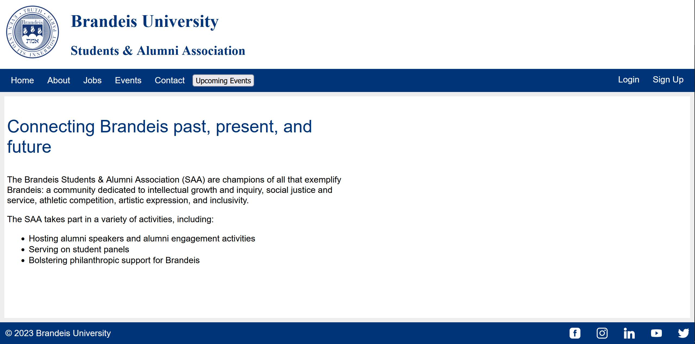
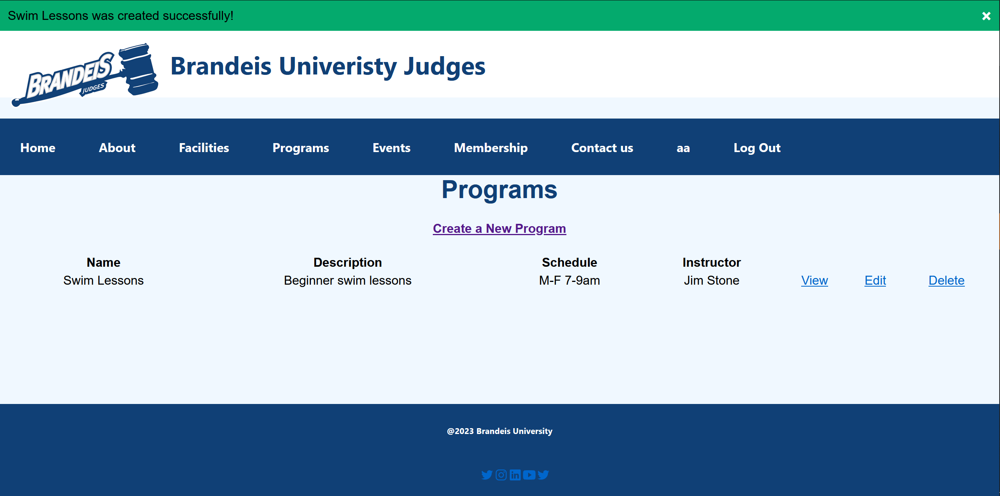

BS in Computer Science & Biochemistry, MS in Biochemistry
Brandeis University
Graduated 2024 GPA: 3.98
LANGUAGES
Python (Pytorch, TensorFlow)
Java (Maven, JUnit)
R (Tidyverse)
JavaScript (Node, React, jQuery)
HTML/CSS
TOOLS & Concepts
Git
Linux
Cloud Computing (AWS, Google Cloud)
Databases (SQL, MongoDB)
Data Structures
Statistical Analysis
Automated Testing
Data Scientist (Co-op) GSK, June - Dec 2024
- Built cheminformatics tools for machine learning and lead drug discovery
- Maintained SQL database in Oracle and Google Cloud
- Built and optimized cheminformatics pipelines in HPC environment
- Led exploratory data analysis and built visuzalizations in Spotfire
Software Engineer (Co-op) Buffr, Jan - May 2024
- Built web app in JavaScript (React, Node) for fintech startup providing financial inclusion for the unbanked in Namibia
- Researched AI credit scoring model architecture and best practices for transparency
Bioinformatics Researcher Brandeis University, May 2021 - May 2024
Studied the role of circular RNA in aging through bioinformatics analysis of deep transcriptomic datasets.
- First author paper under review
- Designed and executed bioinformatics pipelines in Linux HPC environment
- Performed statistical data analysis and visualizations in R
- Awarded grants totaling $16,000 from Quantitative Biology Research Community, Blavatnik Family Foundation, Gordon Science Fellowship
Computer Science Instructor Juni Learning, May 2021 - Feb 2023
- Taught weekly one-on-one coding lessons to K-12 students in Python, Java, Data Structures & Algorithms using a project-based curriculum
- Maintained records covering multiple courses and skill levels of 5-12 students per week
Drug Toxicity Deep Learning Model
Graph Attention Network (GAT) trained to identify toxicity characteristics based on molecular structure.
Written in Python with Pytorch framework.
Disease Diagnosis Deep Learning Model
Fine-tuning of the BERT Large Language Model (LLM) to diagnose Acute Respiratory Distress Syndrome (ARDS) based on medical notes.
Written in Python with Pytorch framework.
Brandeis University Student and Alumni Association Website

Social media website for the BUSAA where members can post job opportunities and events, and communicate through a live chat.
Features user authentication, RESTful API, database management.
Written in Javascript (Node) with MongoDB database.
Brandeis University Sports Complex Website

Website for the Brandeis Sports Complex which provides information on current facilities, programs, and events.
Users can sign up for memberships and message admin through a contact form.
Features user authentication, database management.
Written in Javascript (Node) with MongoDB database.
Behavior-Driven Design Automated Testing
Automated tests for a simple class which converts metric/Imperial units. Written with Cucumber in Java.
Automated Web Testing
Automated tests for the Google Calculator. Written with Selenium WebDriver in Java.